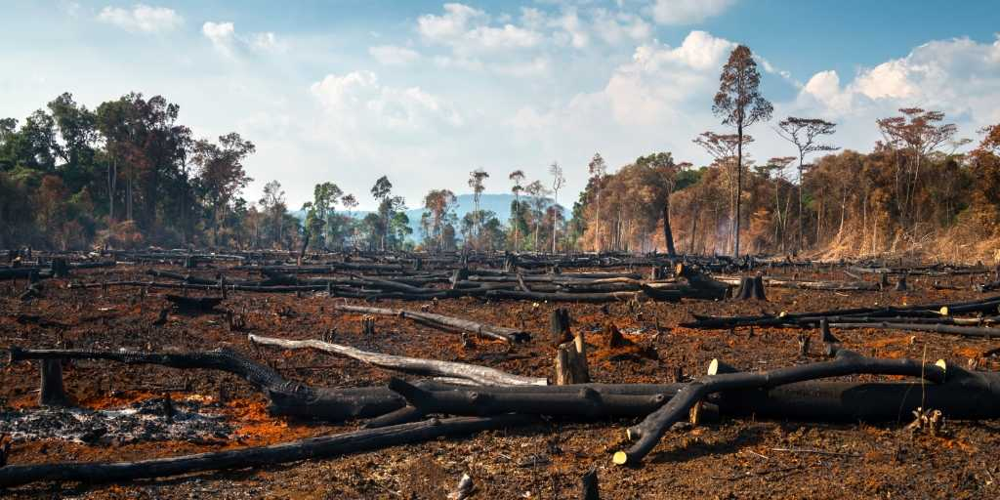
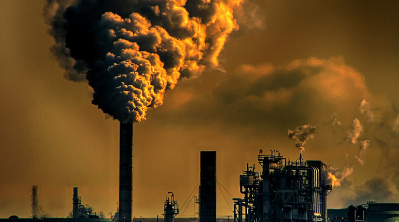

üåç Problemas Ambientais
Poluição
O meio ambiente enfrenta diversos desafios causados pelas atividades humanas. Conheça os principais problemas ambientais que afetam nosso planeta.
A poluição acontece quando substâncias prejudiciais são lançadas no meio ambiente, causando efeitos negativos na natureza e na saúde humana.
As principais formas de poluição são:
- Poluição do ar: causada por fumaça de veículos e indústrias.
- Poluição da água: provocada pelo despejo de esgoto e lixo em rios e mares.
- Poluição do solo: resultado do descarte incorreto de resíduos e produtos químicos.
Esses contaminantes afetam diretamente os ecossistemas e podem gerar doenças graves.
Desmatamento
O desmatamento é o corte ou a retirada de florestas para dar lugar à agricultura, cidades ou exploração de madeira.
As consequências desse processo são sérias:
- Perda do habitat de diversas espécies
- Redução da biodiversidade
- Aumento da emissão de gás carbônico, o que agrava o aquecimento global
Preservar as florestas é essencial para manter o equilíbrio do planeta.

Aquecimento Global
O aquecimento global é o aumento gradual da temperatura da Terra causado principalmente pelas atividades humanas, como a queima de combustíveis fósseis (carros, fábricas e usinas).
Esse processo provoca:
- Derretimento de geleiras
- Elevação do nível do mar
- Alterações nos padrões climáticos
Combater o aquecimento global exige mudanças urgentes nos hábitos de consumo e maior uso de energias renováveis.

Outros Problemas Ambientais
Além dos temas acima, existem muitos outros desafios ambientais importantes, como:
- Perda da biodiversidade: animais e plantas estão desaparecendo por causa da ação humana
- Crescimento populacional descontrolado
- Gestão inadequada do lixo
- Esgotamento dos recursos naturais
Enfrentar essas questões exige consciência, educação e ações sustentáveis em todo o mundo. Juntos, podemos construir um futuro mais saudável e equilibrado para as próximas gerações.
Vídeo: Problemas Ambientais